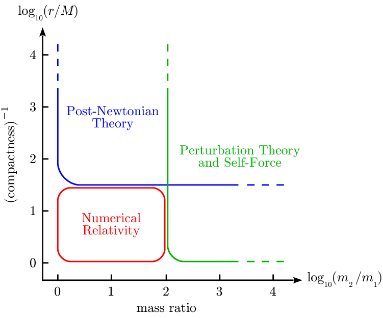

Análisis Post-Newtoniano de Sistemas Binarios
La reciente detección de ondas gravitacionales predichas por la Teoría de la Relatividad General de Einstein, abrirá una nueva ventana de observar el universo y con ello un sin fin de investigaciones relacionadas con el estudio y análisis de las ondas gravitacionales y electromagnéticas generadas por objetos astrofísicos muy masivos. El estudio de la detección de ondas gravitacionales de sistemas binarios se lleva a cabo en tres etapas: la fase lejana, fusión y limite cercano. En este trabajo nos enfocaremos al estudio de la fase lejana o inspiral para la colisión de dos hoyos negros, para su análisis usaremos el formalismo post-Newtoniano. Este formalismo es la herramienta correcta cuando se tienen hoyos negros con características especiales, tales como velocidades pequeñas y autogravedad fuerte. Haciendo uso de los datos de LIGO (Laser Interferometer Gravitational Observatory) en la fase de limite lejano, buscaremos las ondas gravitacionales generados por sistemas binarios de hoyos negros y estrellas de neutrones, así como sus respectivas masas y espines. A partir de modelo matemático de dos cuerpos orbitando, se construyen plantillas realistas de ondas gravitacionales en el dominio del tiempo y el dominio de la frecuencia siguiendo el formalismo post-newtoniano de orden 1, 2.5 y 3.5.